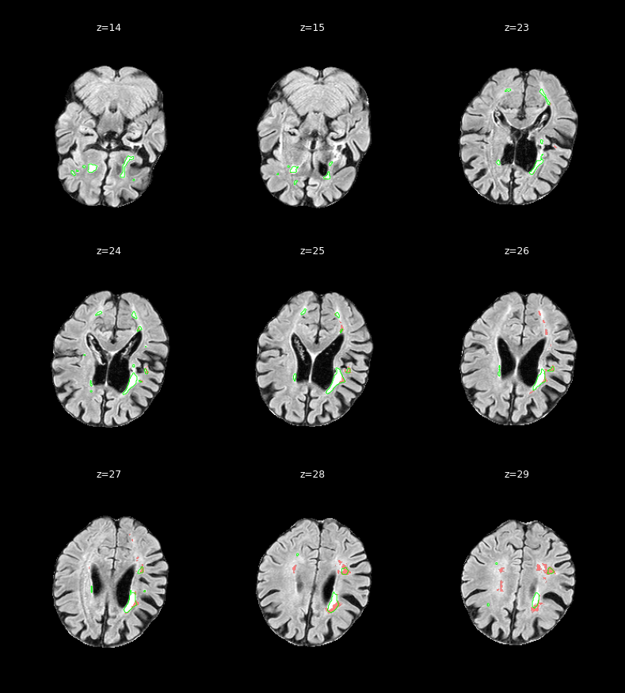

Site: Utrecht · Voxel volume: 2.755 mm³

| Metric | Value |
|---|---|
| Dice (DSC) | 0.2517 |
| Raw predicted lesion voxels | 2,305 |
| Predicted lesion voxels | 2,044 |
| Reference lesion voxels | 2,724 |
| False-positive voxels | 1,444 |
| False-negative voxels | 2,124 |
| Predicted lesion clusters | 13 |
| Predicted volume (mm³) | 5,631.6 |
| Reference volume (mm³) | 7,505.2 |
| Predicted/reference volume ratio | 0.7504 |
| Max WMH probability | 0.9969 |
| Prediction threshold | 0.8500 |
Red = predicted WMH (α=0.5). Green outline = ground truth.